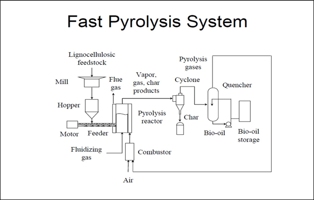

I skipped last week because of an accumulation of personal issues and unanticipated technical problems. I didn’t want to rush something out to meet a self-imposed deadline because this installment required some behind-the-scenes math, and I wanted to ensure it was done correctly.
So this is Part 10. I expected this crazy idea to be dead by now, but the concept appears resilient. In retrospect, the reason it’s survived is pretty simple—the highest cost in conventional desalination is energy, so using the sun’s energy in a natural system has a vast potential to provide fresh water cheaply. I’m sufficiently enthusiastic now that I’ve decided to trademark 1 the concept as “Atmospheric Mining℠” to distinguish it from energy-intensive approaches such as that used by Source Water , where water is actively condensed from thin air. Terrestrial mining is a human-centered industrial-scale operation that collects a natural resource from where it exists naturally, and that’s precisely what this solution comprises. Hence, Atmospheric Mining℠ . Direct-air capture is another facet.
Apropos of recent installments, I ran across an article in the San Francisco Business Times about Charm Industrial , a Bay Area “carbon removal” company. If their approach works, it could provide a way of monetizing the biomass produced. The article itself is behind a paywall, so let me summarize:

Recently, Charm raised a significant VC round ($100M/Series B) led by General Catalyst, a highly regarded venture firm based in Boston. That investment stage usually suggests a credible demonstration of a workable business model. Let’s see if we can figure out how they will make money.
The basis for the funding round was a series of signed deals to remove 140,000 tons of carbon (presumably carbon dioxide) by 2030. These deals are pre-purchase agreements and appear to put a value of $473.21 per ton of carbon dioxide removed. Further, the process does not qualify for consideration for tax-preferred treatment for carbon sequestration at the moment! The most significant agreement is from Frontier Climate , a consortium of ridiculously-profitable tech companies seeking to ‘jump start’ the carbon capture market. It’s a worthy use of capital: Putting such a high price on carbon removal could go a long way toward helping Charm achieve economies of scale while matching Frontier’s objective of plowing $1B into carbon removal 2 .
But is that a lot of carbon or a little? To put this number into perspective, this amount of carbon dioxide is produced by motor vehicles in the US—in just under an hour. 3 So, it’s not a lot. Plus, it’s economically unsustainable. The value of the carbon they store would be the same as paying $200 per barrel of oil to keep it in the ground. This would invoke the “reverse ransom” on carbon that drives “offsets”. General Catalyst must see a credible path toward a significant cost reduction.
Charm’s technology is not particularly novel or high tech: According to the website, the company’s approach uses “fast pyrolysis” (essentially treating biological materials with high heat without air). This process converts biomass into gaseous, liquid, and solid fractions. The gas is combustible for energy, the solid is mainly carbon, and the liquid (condensed from vapor) is black and viscous. The liquid (previously marketed as “biocrude”) is then buried underground. Byproducts include mineral-rich ash and highly porous “biochar” (charcoal) that have market value so these components may help. For more info on the process and its economics, see this article in the MIT Technology Review.

In the context of this series, the question is, “Can we use Charm’s technology (or something like it) to process the leftovers from our notional sugarcane farm in Western Australia?? Certainly, at $473 per ton, the farm will be wildly profitable even if it never sells any sugar. In the longer-term context of Atmospheric Mining℠ , it makes more sense to use the solid components on site (it will, after all, have all of the minerals the plant needs) and use the “charcoal” part to improve the soil. Both pyrolysis oil and charcoal allegedly last for centuries, so it’s a permanent removal of carbon from the atmosphere-biosphere joint system, precisely what a climate solution requires. Charm’s innovation, such as it is, appears to be in developing mobile equipment, the dimensions of a shipping container, that can be moved to the farm rather than transporting the waste to a central facility. That meshes nicely with this ‘solution’, where individual farms are remote and independent.
As you can see from the diagram above, many steps require energy, including milling the feedstock to a particle size suitable for the reactor, heating the reactor to a high temperature, and supplying pressure (and oxygen-free gas) to the reactor. Let’s assume that the process can be run independently, using just the volatile gas from the pyrolysis system as an energy source. The critical question is, “What about the distribution of carbon from the bagasse?” If most of it becomes volatile, the net benefit to the climate will be negligible.
From this paper , the product mix and composition are modestly adjustable based on particle size and temperature, unsurprising given the complex and variable characteristics of the source. At 400°C, the distribution was about 45% by weight biochar, 35% bio-oil, and 10% biogas, with the rest lost during processing, so 80% of the total mass can be stabilized, in principle. Biochar is >65% carbon 4 , while bio-oil from bagasse contains 20% water and is only 45% carbon. 5 From these numbers, we can estimate the stabilizable carbon in a tonne of bagasse at 45%. Converting this to CO2 means that our notional sugarcane farm in Western Australia, at 150 tonnes/ha (wet weight), is 10% sugar, 10% bagasse, and 80% water. So, this is the equivalent of 24.75 tonnes of CO2/ha removed for carbon capture. This is consistent with the total amount I calculated earlier of 38 tonnes of CO2/ha and an overall conversion yield of about 65%.
That’s not too bad; the stabilization may be worth the extra steps.
It’s probably not worth much, but it’s a reminder that “intellectual property” means owning an ‘idea’ is possible and legally permissible. Trademarks are cheaper to obtain than patents—so if someone picks this idea up, I’ve at least got something to offer!
Interestingly, Frontier has a dollar objective ($1B) rather than a carbon objective. No wonder they’re willing to pay that high a price!
Yes. Math. Each gallon of gasoline generates about 10 kilograms of carbon dioxide when burned, and the US uses 9 million (42-gallon) barrels of oil per day for transportation.
Wijitkosum & Jiwnok, “Elemental Composition of Biochar Obtained from AgriculturalWaste for Soil Amendment and Carbon Sequestration”, Appl. Sci. 2019 , 9 , 3980; doi:10.3390/app9193980